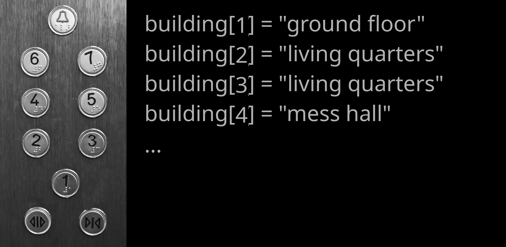

E002 (Fortran) - Arrays and Constructs¶
In this exercise, you learn about some more basic concepts of programming, including arrays and ways to let your programme automate calculations and make decisions. We will explore these concepts using modern Fortran.
Information¶
Topic |
|
|---|---|
Concepts |
|
Skills |
|
Arrays¶
Collections of data can hold multiple values, and working with them saves a lot of time, effort, and memory. In modern Fortran, an array is a collection of values of the same declared type. For example, we can create an array containing years:
integer :: year(2)
year = [2140, 2150]
The array year has two elements. A Fortran array has
a declared type, and all of its elements have that type.
Fortran arrays can also contain character values. For example:
character(len=20) :: station(2)
station = ["EARTH", "MARS"]
When declaring an array, the dimensions can be given explicitly. A one-dimensional array is akin to a mathematical vector.
Index Values¶
If you print an array:
program indexing
implicit none
integer :: year(2)
year = [2140, 2150]
print *, year
end program indexing
the programme displays both values.
Often, however, you will only want to use one of the values stored in an array. This is where index values come in handy.
From mathematical notation, we are already familiar with index values. Think about the notation for a simple sum of all elements in a vector x (= 4, 1, 3, 9, 2):
Here, the index value ranges from 1 to 5. Index values in programming work in the same way. The index value allows you to access a specific value in your array.
Fortran arrays - just like mathematical vectors - normally start at index 1. This sets Fortran apart from many other languages that start with the index 0 and makes it more intuitive in translating mathematical equations.
A good analogy for indexing are elevator controls that take you to floors with different levels (contents) by pressing the appropriate floor number (index value). In an elevator panel that follows Fortran-style indexing, 1 marks the ground floor.

Let’s bring this concept back to coding. Consider the code below:
integer :: x(5)
x = [4, 1, 3, 9, 2]
print *, x(1)
print *, x(5)
This displays the first and fifth elements of the array. You can perform calculations on individual array elements by referencing their index:
print *, year(2) + 20
You can also update an array element:
year(2) = year(2) + 20
print *, year(2)
Fortran arrays are mutable: their elements can be changed after the array has been created.
Array Properties and Intrinsic Functions¶
Fortran provides intrinsic functions for working with arrays. Some useful functions include:
size(array)– number of elements in an array;sum(array)– sum of all elements;minval(array)– smallest element;maxval(array)– largest element;count(mask)– number of.true.elements in a logical array.
For example:
program array_functions
implicit none
real :: values(5)
values = [4.0, 1.0, 3.0, 9.0, 2.0]
print *, "size =", size(values)
print *, "sum =", sum(values)
print *, "minimum =", minval(values)
print *, "maximum =", maxval(values)
end program array_functions
These intrinsic functions are especially useful because they allow common array operations without having to write the corresponding loop yourself.
Comparison Operators¶
Most decisions are based on examining a value, comparing it to a reference value, and using their relation as a basis for decision.
Operator |
Meaning |
|---|---|
|
equal to |
|
not equal to |
|
less than |
|
less than or equal to |
|
greater than |
|
greater than or equal to |
The general syntax for comparing two values is:
[value] [comparison operator] [reference value]
For example:
if (year > 2100) then
print *, "future year"
end if
If Statements¶
We let our programmes make decisions using if statements. For example:
program decision
implicit none
character(len=20) :: exercise
exercise = "boring"
if (exercise == "boring") then
print *, "deal with it"
end if
print *, "done"
end program decision
The if statement checks whether the value is equal to "boring".
Since the comparison is true, the first print statement is executed.
Notice the syntax used by Fortran:
the condition is enclosed in parentheses;
the statement is followed by
then;the conditional block is terminated by
end if;indentation is used to make the structure easier to read.
Try the same programme again, but assign "exciting" to exercise. The
programme should then only display done.
Alternative Conditions¶
Decisions can be more complex than that. If one condition is not met, we may
want to check whether an alternative condition is true. We achieve this using
else if. The else statement covers all remaining cases. For example:
program decision
implicit none
character(len=20) :: target
character(len=20) :: i_am
character(len=20) :: action
target = "human"
i_am = "dalek"
if (target == "dalek") then
action = "run away"
else if (target == "human") then
if (i_am == "dalek") then
action = "exterminate"
else
action = "greet human"
end if
else
action = "do nothing"
end if
print *, action
end program decision
Here, we have nested if statements. Play around with the values assigned
to target and i_am and execute the programme to get a better feeling
for how these statements work.
Combining Conditions¶
It is also possible to combine comparisons using logical operators.
For example, .and. requires both conditions to be true:
if (target == "human" .and. i_am == "dalek") then
action = "exterminate"
end if
Fortran uses .or. when at least one of several conditions must be true:
if (i_am == "dalek" .or. i_am == "cyberman") then
action = "a bad thing"
end if
Other useful logical operators include:
.and.– both conditions must be true;.or.– at least one condition must be true;.not.– reverses a logical condition.
Do Loops¶
do loops, commonly called for loops in other languages, are essential
in programming because they allow you to automate repeated calculations.
Let’s make the following array:
integer :: year(10)
year = [1981, 1982, 1983, 1984, 1985, &
1986, 1987, 1988, 1989, 1990]
Assume we made a systematic mistake in our array and would like to correct it by adding 1 year to each entry. An inefficient way to do this would be:
year(1) = year(1) + 1
year(2) = year(2) + 1
year(3) = year(3) + 1
year(4) = year(4) + 1
year(5) = year(5) + 1
year(6) = year(6) + 1
year(7) = year(7) + 1
year(8) = year(8) + 1
year(9) = year(9) + 1
year(10) = year(10) + 1
This is where do loops come in handy. We can tell our programme to perform
the same calculation for every entry in the array:
program update_year
implicit none
integer :: year(10)
integer :: i
year = [1981, 1982, 1983, 1984, 1985, &
1986, 1987, 1988, 1989, 1990]
do i = 1, 10
year(i) = year(i) + 1
print *, year(i)
end do
end program update_year
The programme executes the body of the loop for each value of i from 1
through 10.
The array’s bounds can also be used so that the loop remains flexible if the
size of the array changes:
do i = 1, size(year)
year(i) = year(i) + 1
print *, year(i)
end do
This is preferable to hard-coding 10 because the loop automatically
adapts to the size of year.
Looping Over Part of an Array¶
If we only want to update everything after 1984, we can specify the starting and ending index explicitly:
do i = 5, size(year)
year(i) = year(i) + 1
print *, year(i)
end do
This loop starts with index 5, corresponding to the value 1985, and continues through the final entry. The loop variable can also have a step size:
do i = 1, 10, 2
print *, year(i)
end do
This visits indices 1, 3, 5, 7, and 9.
Array Sections¶
Fortran also allows you to perform operations only on specific array sections, which can make some operations more concise. For example, instead of looping over every element to add one to an array, we can write:
year = year + 1
We can also operate on part of an array:
year(5:) = year(5:) + 1
The expression year(5:) means all elements from index 5 to the end of the
array.
Fortran has built-in support for a lot of array operations. This is one of the language’s many powerful features. There are, for example, additional ways of array slicing:
program array_slicing
implicit none
integer :: i
integer :: array1(10) ! a 1D array of integers with 10 elements
integer :: array2(10, 10) ! a 2D array of integers with 10 x 10 (100) elements
array1 = [1, 2, 3, 4, 5, 6, 7, 8, 9, 10] ! array constructor; stores numbers 1 - 10 in array1
print *, array1
array1 = [(i, i = 1, 10)] ! implied do loop constructor to achieve the same as above
print *, array1
print *, array1(1:5:2) ! print out elements from 1 to 5 in strides of 2
print *, array1(10:1:-1) ! print the whole array in reverse
array1(:) = 303 ! set all elements to 303 (without a loop)
print *, array1
array1(1:5) = 404 ! set first 5 elements to 404
print *, array1
print *, array2(:,1) ! print only the first column in our 2D array
end program array_slicing
Fortran’s array syntax can therefore often replace many simple loops. Loops remain important, however, when each iteration requires more complicated operations or decisions.
You can learn about more array functionality on this Fortran-lang tutorial page.
Your Task¶
You just finished grading 9 exams on atmospheric physics (ugh!). You have 10
students (and number them in a rather dystopian manner), but only 9 of them
showed up. You saved the grades in an array and entered a ridiculous number
(-9999.0) for the missing student, so you know they didn’t take the exam.
Create the following array:
real :: g(10)
g = [1.7, 2.0, -9999.0, 2.3, 1.3, &
1.0, 1.3, 3.3, 1.7, 1.0]
You now want to calculate the arithmetic mean of the students’ grades according to:
Since one of the students was missing, \(n=9\).
Write code for at least two different ways to calculate the mean grade
based on the g array. Somewhere in your code, you should make use of the
following:
array operations or intrinsic array functions;
comparison operators;
ifstatements;doloops.
Try to keep your code as flexible as possible. Ideally, it should still work next year, when a different student may be missing (corresponding to a different position in your array) or when more students fail to take the exam.
Also make sure you comment each executable instruction in the programme to let other programmers know what you are doing.
When you are happy with your code, put your two (or more) different methods in one file. Save your programme as e002.f90 and submit it via Moodle.